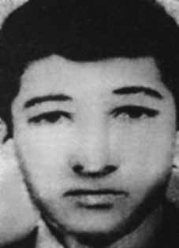

João
Gualberto
Calatrone
CIRCUNSTÂNCIAS DA MORTE
Segundo o Relatório Arroyo, a morte de João Gualberto Calatrone (Zebão) teria ocorrido em 13 de outubro de 1973, na companhia de outros guerrilheiros.
Neste dia, Antônio Alfredo de Lima e André Grabois (Zé Carlos) haviam ido apanhar porcos para a alimentação na antiga roça de Alfredo, chegando ao local por volta das 9h. Após o abate, próximo às 12h, Zé Carlos, Nunes (Divino Ferreira de Souza), Alfredo, Zebão (João Gualberto Calatrone) e João (Dermeval da Silva Pereira) preparavam-se para sair, quando Alfredo ouviu um barulho. De imediato, apareceram soldados apontando as armas e atirando sobre o grupo. João conseguiu escapar, mas os outros foram mortos.
O Diário de Maurício Grabois também faz referência a essas circunstâncias ao narrar a morte de Zebão. No dia 13 de outubro de 1973, o grupo composto por Zé Carlos, Nunes, João, Zebão e Alfredo foram apanhar porcos em uma capoeira abandonada quando cometeram uma série de deslizes, de acordo com Maurício. Eles teriam matado os porcos a tiros, acendido um fogo e permanecido por tempo demasiado no local, chamando a atenção de militares que circulavam na região. Foram surpreendidos e metralhados, escapando apenas João.
O relatório da CEMDP menciona o que o Ministério Público Federal concluiu no seu relatório de 2002 sobre o episódio: “ANDRÉ GRABOIS, morto em confronto na Fazenda do Geraldo Martins (Município de São Domingos do Araguaia), foi enterrado em uma cova rasa na região do Caçador, próximo à casa do pai de Antônio Félix da Silva‟, repetindo-se a mesma informação, em seguida, para João Gualberto Calatroni e Antonio Alfredo Campos”.
À Câmara dos Deputados, Lício Augusto Maciel confirmou, em 26 de junho de 2005, ter atirado em André Grabois, que acompanhava Divino no episódio: “Quase encostei o cano da minha arma em André Grabois: ‘Solte a arma!’. Ele deu aquele pulo e a arma já estava na minha direção. Não deu outra: os meus companheiros, que chegavam, acertariam o André, caso eu tivesse errado, o que era muito difícil, pois estava a um metro e meio, dois metros dele”.
No livro de Luiz Maklouf, Lício diz ter enterrado os corpos destes guerrilheiros mortos no sítio da Oneide, mulher de Alfredo. Em depoimento prestado à Comissão Nacional da Verdade (CNV), o segundo tenente da Polícia Militar de Goiás João Alves de Souza afirma que não participou do evento que resultou na morte de João Gualberto Calatrone, mas que teria feito um informe sobre as execuções do dia 13 de outubro de 2014: “só fiz um informe e uma informação para a zona de reunião de que esses elementos foram assassinados brutalmente e covardemente. Aí quase que eu fui preso e detido por essa informação, eu tive que dar explicações por isso” .
Neste sentido, o Relatório do CIE, Ministério do Exército, registra sua morte em 13 de outubro de 1973 (Arquivo Nacional, SNI: BR_DFANBSB_V8_AC_ACE_54730_86_002 p. 38). Em divergência, O Relatório do CIE, Ministério do Exército, consta Divino Ferreira de Souza, morto no mesmo episódio, teria morrido em 14 de outubro de 1973. Em declarações concedidas ao Ministério Público Federal, em 2001, e citadas pelo livro Dossiê Ditadura, os camponeses Manoel Leal de Lima (Vanu) e Antônio Félix da Silva, que serviram de mateiros ao Exército no período da guerrilha, atestam que João Gualberto foi morto ao se deparar com os militares.
Vanu, ex-guia do exército, depôs que acompanhava um grupo formado por: “o Major Adurbo [Asdrúbal – coronel Lício Augusto Ribeiro Maciel], o sargento Silva, um cabo e cinco soldados, em uma localidade denominada Caçador, quando encontraram os cinco guerrilheiros já mencionados. Eles estavam matando porcos na casa do velho Geraldo quando os militares abriram fogo e mataram Zé Carlos, Alfredo e Zebão”.
Já Antônio Félix da Silva declarou que ouviu de Vanu mais informações sobre Divino. O guia teria colocado o corpo dos três guerrilheiros mortos – Zé Carlos, Zebão e Alfredo – em cima de uma égua e conduzido da fazenda do Geraldo Martins, onde ocorrera o confronto, até a casa do pai de Antônio Félix, onde foram enterrados. Antônio acrescenta que voltou ao local trinta dias depois e encontrou a terra remexida e, três meses depois, já não havia vestígios dos ossos no local.
Quanto ao paradeiro dos corpos dos guerrilheiros, no livro Mata! O Major Curió e as guerrilhas no Araguaia, o tenente da reserva José Vargas Jiménez alegou tê-los visto expostos ao sol, dias depois do combate liderado por Lício.
According to the Arroyo Report, the death of João Gualberto Calatrone (Zebão) occurred on October 13, 1973, in the company of other guerrillas.
On this day, Antônio Alfredo de Lima and André Grabois (Zé Carlos) had gone to collect pigs for food in Alfredo's old farm, arriving at the place around 9 am. After the slaughter, around 12pm, Zé Carlos, Nunes (Divino Ferreira de Souza), Alfredo, Zebão (João Gualberto Calatrone) and João (Dermeval da Silva Pereira) were preparing to leave, when Alfredo heard a noise. Immediately, soldiers appeared pointing their weapons and shooting at the group. João managed to escape, but the others were killed.
Maurício Grabois' Diary also makes reference to these circumstances when narrating Zebão's death. On October 13, 1973, the group made up of Zé Carlos, Nunes, João, Zebão and Alfredo went to catch pigs in an abandoned coop when they committed a series of slips, according to Maurício. They allegedly shot the pigs, lit a fire and remained in the area for too long, attracting the attention of soldiers who were circulating in the region. They were surprised and machine-gunned, with only João escaping.
The CEMDP report mentions what the Federal Public Ministry concluded in its 2002 report on the episode: “ANDRÉ GRABOIS, killed in a confrontation at Fazenda do Geraldo Martins (Municipality of São Domingos do Araguaia), was buried in a shallow grave in the Caçador region, close to the house of Antônio Félix da Silva's father', repeating the same information, then, for João Gualberto Calatroni and Antonio Alfredo Campos”.
To the Chamber of Deputies, Lício Augusto Maciel confirmed, on June 26, 2005, that he had shot André Grabois, who accompanied Divino in the episode: “I almost put the barrel of my gun on André Grabois: ‘Drop the weapon!’. He made that jump and the gun was already in my direction. There was no other: my companions, who arrived, would hit André, if I had missed, which was very difficult, as I was one and a half meters, two meters away from him”.
In Luiz Maklouf's book, Lício says he buried the bodies of these dead guerrillas on the site of Oneide, Alfredo's wife. In a statement given to the National Truth Commission (CNV), the second lieutenant of the Military Police of Goiás João Alves de Souza states that he did not participate in the event that resulted in the death of João Gualberto Calatrone, but that he had made a report about the executions on October 13, 2014: "I only made a report and information for the meeting area that these elements were brutally and cowardly murdered. Then I was almost arrested and detained for this information, I had to explain why”.
In this sense, the CIE Report, Ministry of the Army, records his death on October 13, 1973 (Arquivo Nacional, SNI: BR_DFANBSB_V8_AC_ACE_54730_86_002 p. 38). In divergence, the Report of the CIE, Ministry of the Army, states Divino Ferreira de Souza, killed in the same episode, would have died on October 14, 1973. In statements given to the Federal Public Ministry, in 2001, and cited in the book Dossiê Ditadura, the peasants Manoel Leal de Lima (Vanu) and Antônio Félix da Silva, who served as bushmen for the Army during the guerrilla period, attest that João Gualberto was killed when he encountered the military.
Vanu, a former army guide, testified that he was accompanying a group made up of: "Major Adurbo [Asdrúbal – Colonel Lício Augusto Ribeiro Maciel], Sergeant Silva, a corporal and five soldiers, in a town called Caçador, when they encountered the five guerrillas already mentioned. They were killing pigs in old Geraldo's house when the military opened fire and killed Zé Carlos, Alfredo and Zebão."
Antônio Félix da Silva declared that he heard more information about Divino from Vanu. The guide would have placed the bodies of the three dead guerrillas – Zé Carlos, Zebão and Alfredo – on top of a mare and taken them from Geraldo Martins' farm, where the confrontation had occurred, to the house of Antônio Félix's father, where they were buried. Antônio adds that he returned to the site thirty days later and found the earth disturbed and, three months later, there were no longer any traces of the bones at the site.
As for the whereabouts of the guerrillas' bodies, in the book Mata! Major Curió and the guerrillas in Araguaia, reserve lieutenant José Vargas Jiménez claimed to have seen them exposed to the sun, days after the fight led by Lício.
Según el Informe Arroyo, la muerte de João Gualberto Calatrone (Zebão) ocurrió el 13 de octubre de 1973, en compañía de otros guerrilleros.
Ese día, Antônio Alfredo de Lima y André Grabois (Zé Carlos) habían ido a recoger cerdos para alimentarse en la antigua hacienda de Alfredo, llegando al lugar alrededor de las 9 de la mañana. Después de la masacre, alrededor de las 12:00 horas, Zé Carlos, Nunes (Divino Ferreira de Souza), Alfredo, Zebão (João Gualberto Calatrone) y João (Dermeval da Silva Pereira) se disponían a salir, cuando Alfredo escuchó un ruido. Inmediatamente, aparecieron soldados apuntando con sus armas y disparando contra el grupo. João logró escapar, pero los demás fueron asesinados.
El Diario de Maurício Grabois también hace referencia a estas circunstancias al narrar la muerte de Zebão. El 13 de octubre de 1973, el grupo formado por Zé Carlos, Nunes, João, Zebão y Alfredo fue a cazar cerdos en un gallinero abandonado cuando cometieron una serie de deslices, según Maurício. Presuntamente dispararon a los cerdos, prendieron fuego y permanecieron en la zona demasiado tiempo, llamando la atención de los soldados que circulaban por la región. Fueron sorprendidos y ametrallados, escapando sólo João.
El informe del CEMDP menciona lo que el Ministerio Público Federal concluyó en su informe de 2002 sobre el episodio: “ANDRÉ GRABOIS, muerto en un enfrentamiento en la Fazenda do Geraldo Martins (municipio de São Domingos do Araguaia), fue enterrado en una fosa poco profunda en la región de Caçador, cerca de la casa del padre de Antônio Félix da Silva", repitiendo la misma información, luego, para João Gualberto Calatroni y Antonio Alfredo Campos”.
Ante la Cámara de Diputados, Lício Augusto Maciel confirmó, el 26 de junio de 2005, que había disparado contra André Grabois, quien acompañó a Divino en el episodio: “Casi le apunto con el cañón de mi arma a André Grabois: '¡Suelta el arma!'. Dio ese salto y el arma ya estaba en mi dirección. No hubo otra: mis compañeros, que llegaban, le pegaban a André, si yo fallaba, lo cual era muy difícil, ya que yo estaba a un metro y medio, dos metros de él”.
En el libro de Luiz Maklouf, Lício dice que enterró los cuerpos de estos guerrilleros muertos en el lugar de Oneide, la esposa de Alfredo. En declaración dada a la Comisión Nacional de la Verdad (CNV), el subteniente de la Policía Militar de Goiás João Alves de Souza afirma que no participó en el evento que resultó en la muerte de João Gualberto Calatrone, pero que había hecho un informe sobre las ejecuciones el 13 de octubre de 2014: "Sólo hice un informe e información para el área de reunión de que estos elementos fueron asesinados brutal y cobardemente. Luego casi fui arrestado y detenido por esta información, tuve que explicar por qué”.
En este sentido, el Informe CIE, Ministerio del Ejército, registra su fallecimiento el 13 de octubre de 1973 (Arquivo Nacional, SNI: BR_DFANBSB_V8_AC_ACE_54730_86_002 p. 38). En divergencia, el Informe de la CIE, Ministerio del Ejército, afirma que Divino Ferreira de Souza, asesinado en el mismo episodio, habría fallecido el 14 de octubre de 1973. En declaraciones dadas al Ministerio Público Federal, en 2001, y citadas en el libro Dossiê Ditadura, los campesinos Manoel Leal de Lima (Vanu) y Antônio Félix da Silva, que sirvieron como bosquimanos del Ejército durante el período guerrillero, dan fe de que João Gualberto fue asesinado cuando se encontró con los militares.
Vanu, ex guía del ejército, declaró que acompañaba a un grupo formado por: "El mayor Adurbo [Asdrúbal – Coronel Lício Augusto Ribeiro Maciel], el sargento Silva, un cabo y cinco soldados, en un pueblo llamado Caçador, cuando se encontraron con los cinco guerrilleros ya mencionados. Estaban matando cerdos en la casa del viejo Geraldo cuando los militares abrieron fuego y mataron a Zé Carlos, Alfredo y Zebão".
Antônio Félix da Silva declaró que escuchó más información sobre Divino de Vanu. El guía habría colocado los cuerpos de los tres guerrilleros muertos – Zé Carlos, Zebão y Alfredo – encima de una yegua y los habría llevado desde la hacienda de Geraldo Martins, donde ocurrió el enfrentamiento, hasta la casa del padre de Antônio Félix, donde fueron enterrados. Antônio agrega que regresó al sitio treinta días después y encontró la tierra removida y, tres meses después, ya no había rastros de los huesos en el sitio.
En cuanto al paradero de los cuerpos de los guerrilleros, en el libro ¡Mata! El mayor Curió y los guerrilleros en Araguaia, el teniente de reserva José Vargas Jiménez aseguraron haberlos visto expuestos al sol, días después del combate liderado por Lício.